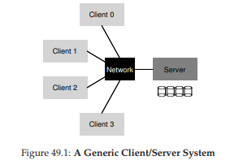
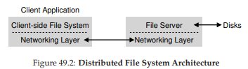
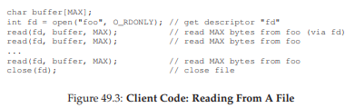
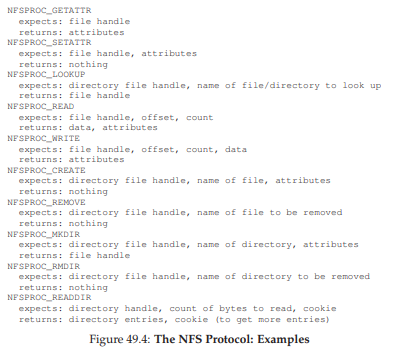
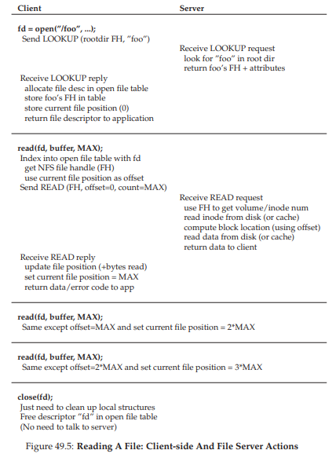
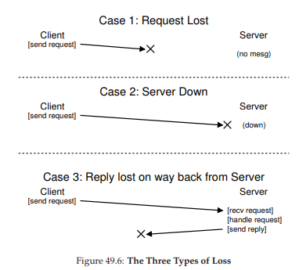
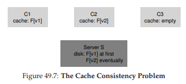

49. Hệ thống Tệp Mạng của Sun (Sun’s Network File System – NFS)
Một trong những ứng dụng đầu tiên của mô hình tính toán client/server phân tán là trong lĩnh vực distributed file system (hệ thống tệp phân tán). Trong môi trường như vậy, có một số máy client và một máy server (hoặc một vài máy); server lưu trữ dữ liệu trên các ổ đĩa của nó, và các client yêu cầu dữ liệu thông qua các thông điệp giao thức được định dạng chuẩn.

Hình 49.1: Một hệ thống Client/Server tổng quát
Như bạn có thể thấy từ hình minh họa, server sở hữu các ổ đĩa, và các client gửi thông điệp qua mạng để truy cập thư mục và tệp trên các ổ đĩa đó.
Tại sao chúng ta lại sử dụng mô hình này? (tức là, tại sao không để client dùng ổ đĩa cục bộ của chính nó?)
- Lý do chính là mô hình này cho phép chia sẻ dữ liệu dễ dàng giữa các client. Ví dụ, nếu bạn truy cập một tệp trên một máy (Client 0) và sau đó sử dụng một máy khác (Client 2), bạn sẽ có cùng một cái nhìn về hệ thống tệp. Dữ liệu của bạn được chia sẻ một cách tự nhiên giữa các máy khác nhau.
- Lợi ích thứ hai là quản trị tập trung; ví dụ, việc sao lưu tệp có thể được thực hiện từ một vài máy server thay vì từ hàng loạt máy client.
- Một lợi ích khác có thể là bảo mật; việc đặt tất cả server trong một phòng máy được khóa sẽ ngăn chặn một số loại sự cố nhất định.
THE CRUX: LÀM THẾ NÀO ĐỂ XÂY DỰNG MỘT DISTRIBUTED FILE SYSTEM
Làm thế nào để xây dựng một hệ thống tệp phân tán? Những khía cạnh chính cần xem xét là gì? Điều gì dễ mắc sai lầm? Chúng ta có thể học được gì từ các hệ thống hiện có?
49.1 Một Distributed File System cơ bản
Bây giờ chúng ta sẽ nghiên cứu kiến trúc của một hệ thống tệp phân tán đơn giản. Một hệ thống tệp phân tán kiểu client/server đơn giản có nhiều thành phần hơn so với các hệ thống tệp mà chúng ta đã nghiên cứu trước đây.
-
Phía client: có các ứng dụng client truy cập tệp và thư mục thông qua client-side file system (hệ thống tệp phía client).
Ứng dụng client gọi các system call tới client-side file system (chẳng hạn nhưopen(),read(),write(),close(),mkdir(), v.v.) để truy cập các tệp được lưu trữ trên server.
Do đó, đối với ứng dụng client, hệ thống tệp không khác gì so với hệ thống tệp cục bộ (dựa trên đĩa), ngoại trừ có thể về hiệu năng; theo cách này, distributed file system cung cấp khả năng truy cập tệp minh bạch (transparent access) – một mục tiêu hiển nhiên; rốt cuộc, ai lại muốn dùng một hệ thống tệp yêu cầu một bộ API khác hoặc gây khó khăn khi sử dụng? -
Vai trò của client-side file system là thực hiện các hành động cần thiết để xử lý các system call đó.
Ví dụ, nếu client thực hiện một yêu cầuread(), client-side file system có thể gửi một thông điệp tới server-side file system (hay thường gọi là file server) để đọc một block cụ thể; file server sau đó sẽ đọc block từ đĩa (hoặc từ in-memory cache của nó), và gửi lại một thông điệp cho client chứa dữ liệu được yêu cầu.
Client-side file system sau đó sẽ sao chép dữ liệu vào user buffer được truyền cho system callread(), và yêu cầu sẽ hoàn tất.
Lưu ý rằng, một lầnread()tiếp theo của cùng block đó trên client có thể được lấy từ bộ nhớ cache của client hoặc thậm chí từ đĩa cục bộ của client; trong trường hợp tốt nhất, sẽ không cần tạo ra lưu lượng mạng nào.

Hình 49.2: Kiến trúc Distributed File System
Từ cái nhìn tổng quan đơn giản này, bạn có thể thấy rằng có hai thành phần phần mềm quan trọng trong một distributed file system kiểu client/server:
- Client-side file system
- File server
Hành vi kết hợp của chúng quyết định hành vi của toàn bộ distributed file system. Bây giờ là lúc nghiên cứu một hệ thống cụ thể: Sun’s Network File System (NFS).
49.2 Tìm hiểu về NFS
Một trong những hệ thống phân tán đầu tiên và khá thành công được phát triển bởi Sun Microsystems, được gọi là Sun Network File System (NFS) [S86].
Khi định nghĩa NFS, Sun đã chọn một cách tiếp cận khác thường: thay vì xây dựng một hệ thống độc quyền và đóng, Sun đã phát triển một giao thức mở chỉ đơn giản là xác định chính xác định dạng thông điệp mà client và server sẽ sử dụng để giao tiếp.
Nhờ đó, các nhóm khác nhau có thể phát triển NFS server của riêng họ và cạnh tranh trong thị trường NFS, đồng thời vẫn đảm bảo khả năng tương tác (interoperability). Và điều này đã thành công: ngày nay có nhiều công ty bán NFS server (bao gồm Oracle/Sun, NetApp [HLM94], EMC, IBM và những hãng khác), và sự thành công rộng rãi của NFS có thể được cho là nhờ vào cách tiếp cận “thị trường mở” này.
ASIDE: TẠI SAO SERVER BỊ CRASH
Trước khi đi sâu vào chi tiết của giao thức NFSv2, bạn có thể tự hỏi: tại sao server lại bị crash? Như bạn có thể đoán, có rất nhiều lý do. Server có thể đơn giản bị mất điện (tạm thời); chỉ khi có điện trở lại thì máy mới có thể khởi động lại. Server thường bao gồm hàng trăm nghìn hoặc thậm chí hàng triệu dòng mã; do đó, chúng có lỗi (bug) (ngay cả phần mềm tốt cũng có một vài lỗi trên mỗi trăm hoặc nghìn dòng mã), và cuối cùng sẽ gặp phải một lỗi gây crash. Chúng cũng có thể bị memory leak (rò rỉ bộ nhớ); ngay cả một rò rỉ nhỏ cũng có thể khiến hệ thống hết bộ nhớ và crash. Và cuối cùng, trong các hệ thống phân tán, luôn tồn tại mạng giữa client và server; nếu mạng hoạt động bất thường (ví dụ: nếu bị phân vùng – network partition – và client và server vẫn hoạt động nhưng không thể giao tiếp), thì có thể trông như một máy từ xa đã bị crash, nhưng thực tế là nó chỉ tạm thời không thể truy cập qua mạng.
49.3 Trọng tâm: Khôi phục nhanh và đơn giản khi server bị crash (Simple And Fast Server Crash Recovery)
Trong chương này, chúng ta sẽ thảo luận về giao thức NFS cổ điển (phiên bản 2, hay còn gọi là NFSv2), vốn đã là tiêu chuẩn trong nhiều năm; khi chuyển sang NFSv3 chỉ có một số thay đổi nhỏ, còn khi chuyển sang NFSv4 thì có những thay đổi lớn hơn về giao thức. Tuy nhiên, NFSv2 vừa tuyệt vời vừa gây nhiều bực bội, và do đó sẽ là trọng tâm nghiên cứu của chúng ta.
Trong NFSv2, mục tiêu chính khi thiết kế giao thức là khôi phục nhanh chóng và đơn giản khi server bị crash. Trong môi trường nhiều client – một server, mục tiêu này là hoàn toàn hợp lý; bất kỳ phút nào server ngừng hoạt động (hoặc không thể truy cập) đều khiến tất cả các máy client (và người dùng của chúng) không hài lòng và giảm năng suất. Nói cách khác, server ra sao thì cả hệ thống sẽ như vậy.
49.4 Chìa khóa để khôi phục nhanh khi crash: Statelessness
Mục tiêu đơn giản này được hiện thực hóa trong NFSv2 bằng cách thiết kế một giao thức stateless (không lưu trạng thái). Theo thiết kế, server không theo dõi bất kỳ thông tin nào về những gì đang diễn ra ở mỗi client.
Ví dụ: server không biết client nào đang cache block nào, hoặc file nào đang được mở ở mỗi client, hoặc vị trí con trỏ file hiện tại của một file, v.v. Nói ngắn gọn, server không theo dõi bất kỳ hoạt động nào của client; thay vào đó, giao thức được thiết kế sao cho mỗi yêu cầu giao thức đều chứa toàn bộ thông tin cần thiết để hoàn tất yêu cầu đó. Nếu điều này chưa rõ ràng, cách tiếp cận stateless sẽ trở nên dễ hiểu hơn khi chúng ta phân tích chi tiết giao thức ở phần sau.
Ví dụ về một giao thức stateful (có lưu trạng thái, tức là không stateless) là system call open().
Với một pathname, open() trả về một file descriptor (một số nguyên). Descriptor này được sử dụng trong các call read() hoặc write() tiếp theo để truy cập các block dữ liệu của file, như trong đoạn code ứng dụng sau (lưu ý: phần kiểm tra lỗi của system call được lược bỏ để tiết kiệm không gian):
char buffer[MAX];
int fd = open("foo", O_RDONLY); // lấy descriptor "fd"
read(fd, buffer, MAX); // đọc MAX byte từ foo qua "fd"
read(fd, buffer, MAX); // đọc MAX byte lần nữa
...
read(fd, buffer, MAX); // đọc MAX byte lần nữa
close(fd); // đóng file

Hình 49.3: Mã phía client – Đọc từ một file
Bây giờ hãy tưởng tượng client-side file system mở file bằng cách gửi một thông điệp giao thức tới server với nội dung: “mở file ‘foo’ và trả lại cho tôi một descriptor”. File server sau đó mở file cục bộ ở phía nó và gửi descriptor này về cho client.
Trong các lần đọc tiếp theo, ứng dụng client sử dụng descriptor đó để gọi system call read(); client-side file system sẽ truyền descriptor này trong thông điệp gửi tới file server, với nội dung: “đọc một số byte từ file được tham chiếu bởi descriptor mà tôi đang gửi cho bạn”.
Trong ví dụ này, file descriptor là một phần của shared state (trạng thái chia sẻ) giữa client và server (Ousterhout gọi đây là distributed state [O91]). Shared state, như đã gợi ý ở trên, làm phức tạp quá trình khôi phục sau crash.
Hãy tưởng tượng server bị crash sau khi hoàn tất lần đọc đầu tiên, nhưng trước khi client gửi yêu cầu đọc thứ hai. Sau khi server khởi động lại, client gửi yêu cầu đọc thứ hai. Đáng tiếc, server không hề biết fd đang tham chiếu tới file nào; thông tin đó chỉ tồn tại tạm thời trong bộ nhớ và đã bị mất khi server crash.
Để xử lý tình huống này, client và server sẽ phải thực hiện một recovery protocol (giao thức khôi phục), trong đó client phải giữ đủ thông tin trong bộ nhớ của mình để có thể thông báo cho server những gì nó cần biết (trong trường hợp này là file descriptor fd tham chiếu tới file foo).
Tình huống còn tệ hơn khi xét đến việc stateful server phải xử lý client crash.
Ví dụ: một client mở một file và sau đó bị crash. Lời gọi open() đã tiêu tốn một file descriptor trên server; làm sao server biết được khi nào thì an toàn để đóng file đó?
Trong hoạt động bình thường, client cuối cùng sẽ gọi close() và thông báo cho server rằng file nên được đóng. Tuy nhiên, khi client bị crash, server sẽ không bao giờ nhận được close(), và do đó phải tự phát hiện client đã crash để đóng file.
Vì những lý do này, các nhà thiết kế NFS đã quyết định theo đuổi cách tiếp cận stateless: mỗi thao tác của client đều chứa toàn bộ thông tin cần thiết để hoàn tất yêu cầu.
Không cần cơ chế khôi phục phức tạp; server chỉ cần khởi động lại, và client, trong trường hợp xấu nhất, chỉ cần gửi lại yêu cầu.
49.5 Giao thức NFSv2 (The NFSv2 Protocol)
Chúng ta đến với phần định nghĩa giao thức NFSv2. Bài toán đặt ra rất đơn giản:
THE CRUX: LÀM THẾ NÀO ĐỂ ĐỊNH NGHĨA MỘT FILE PROTOCOL THEO KIỂU STATELESS
Làm thế nào để định nghĩa giao thức mạng cho phép hoạt động ở chế độ stateless (không lưu trạng thái)? Rõ ràng, các call stateful nhưopen()không thể nằm trong phạm vi thảo luận (vì nó yêu cầu server phải theo dõi các file đang mở); tuy nhiên, ứng dụng phía client vẫn muốn gọiopen(),read(),write(),close()và các call API chuẩn khác để truy cập file và thư mục. Do đó, câu hỏi chi tiết hơn là: làm thế nào để định nghĩa giao thức vừa stateless vừa hỗ trợ API hệ thống tệp POSIX?
Một yếu tố then chốt để hiểu thiết kế của giao thức NFS là file handle. File handle được dùng để mô tả duy nhất file hoặc thư mục mà một thao tác cụ thể sẽ thực hiện; do đó, nhiều yêu cầu giao thức sẽ bao gồm một file handle.
Bạn có thể hình dung một file handle gồm ba thành phần quan trọng:
- Volume identifier (định danh volume)
- Inode number (số inode)
- Generation number (số thế hệ)
Kết hợp lại, ba thành phần này tạo thành một định danh duy nhất cho một file hoặc thư mục mà client muốn truy cập.
- Volume identifier cho server biết yêu cầu đang tham chiếu tới hệ thống tệp nào (một NFS server có thể export nhiều hệ thống tệp).
- Inode number cho server biết file nào trong phân vùng đó đang được truy cập.
- Generation number cần thiết khi tái sử dụng một inode number; bằng cách tăng giá trị này mỗi khi inode number được tái sử dụng, server đảm bảo rằng một client với file handle cũ sẽ không thể vô tình truy cập vào file mới được cấp phát.
Dưới đây là tóm tắt một số thành phần quan trọng của giao thức; toàn bộ giao thức có thể tìm thấy ở nơi khác (xem sách của Callaghan để có cái nhìn chi tiết và xuất sắc về NFS [C00]).

Hình 49.4: Giao thức NFS – Ví dụ
Một số thành phần quan trọng của giao thức:
-
LOOKUP: được dùng để lấy file handle, sau đó sẽ được sử dụng để truy cập dữ liệu file. Client gửi directory file handle và tên file cần tra cứu; server trả về file handle (hoặc directory handle) của file đó kèm theo attributes (thuộc tính).
Ví dụ: giả sử client đã có file handle của thư mục gốc/(thực tế, điều này có được thông qua NFS mount protocol, là cách client và server kết nối ban đầu; chúng ta sẽ không bàn chi tiết về mount protocol ở đây). Nếu một ứng dụng trên client mở file/foo.txt, client-side file system sẽ gửi yêu cầu LOOKUP tới server, truyền vào file handle của/và tênfoo.txt; nếu thành công, file handle (và attributes) củafoo.txtsẽ được trả về. -
Attributes: là metadata mà hệ thống tệp lưu cho mỗi file, bao gồm thời gian tạo file, thời gian sửa đổi cuối cùng, kích thước, thông tin quyền sở hữu và phân quyền, v.v. – tức là cùng loại thông tin mà bạn nhận được khi gọi
stat()trên một file. -
READ và WRITE:
- READ yêu cầu client gửi file handle, offset trong file và số byte cần đọc. Server sẽ đọc dữ liệu (file handle cho biết volume và inode, offset và count cho biết byte nào cần đọc) và trả về dữ liệu cùng attributes mới nhất (hoặc lỗi nếu thất bại).
- WRITE tương tự, nhưng dữ liệu được gửi từ client tới server, và server trả về mã thành công cùng attributes mới nhất.
-
GETATTR: cho một file handle, yêu cầu này trả về attributes của file, bao gồm thời gian sửa đổi cuối cùng. Chúng ta sẽ thấy tại sao yêu cầu này quan trọng trong NFSv2 khi bàn về caching (bạn có đoán được lý do không?).
49.6 Từ giao thức đến Distributed File System (From Protocol To Distributed File System)
Hy vọng đến đây bạn đã hình dung được cách giao thức này được triển khai thành một hệ thống tệp phân tán thông qua client-side file system và file server.
- Client-side file system theo dõi các file đang mở và thường dịch các yêu cầu của ứng dụng thành tập hợp các thông điệp giao thức tương ứng.
- Server chỉ đơn giản phản hồi các thông điệp giao thức, mỗi thông điệp chứa toàn bộ thông tin cần thiết để hoàn tất yêu cầu.
Ví dụ, hãy xét một ứng dụng đơn giản đọc một file. Trong sơ đồ (Hình 49.5), chúng ta thấy các system call mà ứng dụng thực hiện, và cách client-side file system cùng file server xử lý các call này.

Hình 49.5: Đọc một file – Hoạt động của Client-side và File Server
Một vài nhận xét về hình minh họa:
-
Client theo dõi toàn bộ trạng thái liên quan đến truy cập file, bao gồm ánh xạ từ file descriptor (số nguyên) sang NFS file handle và vị trí con trỏ file hiện tại. Điều này cho phép client biến mỗi yêu cầu đọc (vốn không chỉ rõ offset cần đọc) thành một thông điệp READ được định dạng đúng, chỉ rõ cho server byte nào của file cần đọc. Sau khi đọc thành công, client cập nhật vị trí con trỏ file; các lần đọc tiếp theo sẽ dùng cùng file handle nhưng offset khác.
-
Tương tác với server: Khi file được mở lần đầu, client-side file system gửi thông điệp LOOKUP. Nếu đường dẫn dài (ví dụ
/home/remzi/foo.txt), client sẽ gửi ba LOOKUP:- Một để tra
hometrong thư mục/ - Một để tra
remzitronghome - Và một để tra
foo.txttrongremzi.
- Một để tra
-
Mỗi yêu cầu tới server đều chứa toàn bộ thông tin cần thiết để hoàn tất yêu cầu. Đây là điểm thiết kế quan trọng để có thể khôi phục trơn tru sau khi server bị lỗi, vì nó đảm bảo server không cần trạng thái để phản hồi yêu cầu.
49.7 Xử lý lỗi server với các thao tác idempotent (Handling Server Failure With Idempotent Operations)
Khi một client gửi thông điệp tới server, đôi khi nó không nhận được phản hồi. Có nhiều nguyên nhân có thể dẫn đến việc này.
- Trong một số trường hợp, thông điệp có thể bị network (mạng) làm rơi; mạng có thể làm mất gói tin, và do đó hoặc yêu cầu hoặc phản hồi có thể bị mất, khiến client không bao giờ nhận được câu trả lời.
- Cũng có thể server đã bị crash và do đó hiện tại không phản hồi các thông điệp. Sau một thời gian, server sẽ được khởi động lại và chạy bình thường, nhưng trong thời gian đó tất cả các yêu cầu đã bị mất.
Trong tất cả các trường hợp này, client sẽ phải đối mặt với câu hỏi: nên làm gì khi server không phản hồi kịp thời?
Trong NFSv2, client xử lý tất cả các lỗi này theo một cách duy nhất, thống nhất và gọn gàng: nó đơn giản là gửi lại yêu cầu.
Cụ thể, sau khi gửi yêu cầu, client đặt một bộ đếm thời gian (timer) để kích hoạt sau một khoảng thời gian nhất định.
- Nếu phản hồi được nhận trước khi timer kích hoạt, timer bị hủy và mọi thứ đều ổn.
- Nếu timer kích hoạt trước khi nhận được phản hồi, client giả định rằng yêu cầu chưa được xử lý và gửi lại.
Nếu server phản hồi, mọi thứ lại ổn và client đã xử lý gọn gàng vấn đề.
Khả năng của client trong việc đơn giản gửi lại yêu cầu (bất kể nguyên nhân lỗi là gì) là nhờ một thuộc tính quan trọng của hầu hết các yêu cầu NFS: chúng là idempotent.
Idempotent nghĩa là: hiệu ứng của việc thực hiện thao tác nhiều lần tương đương với hiệu ứng của việc thực hiện thao tác đó một lần duy nhất.
- Ví dụ: nếu bạn ghi một giá trị vào một vị trí bộ nhớ ba lần, kết quả giống như chỉ ghi một lần ⇒ “store value to memory” là một thao tác idempotent.
- Ngược lại, nếu bạn tăng một bộ đếm ba lần, kết quả sẽ khác so với chỉ tăng một lần ⇒ “increment counter” không phải là idempotent.
Nói chung, mọi thao tác chỉ đọc dữ liệu thì hiển nhiên là idempotent; còn thao tác cập nhật dữ liệu thì cần xem xét kỹ để xác định xem nó có thuộc tính này hay không.
Trọng tâm của thiết kế crash recovery (khôi phục sau crash) trong NFS là tính idempotent của hầu hết các thao tác phổ biến:
- LOOKUP và READ là idempotent một cách hiển nhiên, vì chúng chỉ đọc thông tin từ file server và không cập nhật gì.
- Thú vị hơn, WRITE cũng là idempotent. Nếu một WRITE thất bại, client có thể đơn giản gửi lại. Thông điệp WRITE chứa dữ liệu, số byte (count), và offset chính xác để ghi dữ liệu. Do đó, nó có thể được lặp lại với đảm bảo rằng kết quả của nhiều lần ghi giống hệt kết quả của một lần ghi.

Hình 49.6: Ba loại mất mát (The Three Types Of Loss)
Theo cách này, client có thể xử lý tất cả các timeout theo một cách thống nhất:
- Case 1: Nếu một yêu cầu WRITE bị mất, client sẽ gửi lại, server thực hiện ghi, và mọi thứ ổn.
- Case 2: Nếu server bị down khi yêu cầu được gửi, nhưng đã up trở lại khi yêu cầu thứ hai được gửi, mọi thứ vẫn hoạt động như mong muốn.
- Case 3: Nếu server nhận yêu cầu WRITE, ghi dữ liệu xuống đĩa và gửi phản hồi, nhưng phản hồi bị mất, client sẽ gửi lại yêu cầu. Khi nhận lại, server sẽ thực hiện đúng thao tác như trước: ghi dữ liệu xuống đĩa và phản hồi. Nếu lần này client nhận được phản hồi, mọi thứ lại ổn.
Như vậy, client đã xử lý cả message loss (mất thông điệp) và server failure (lỗi server) theo một cách thống nhất. Gọn gàng!
Một lưu ý nhỏ: một số thao tác khó để làm idempotent.
Ví dụ: khi bạn tạo một thư mục đã tồn tại, bạn sẽ nhận thông báo rằng yêu cầu mkdir thất bại. Trong NFS, nếu file server nhận thông điệp giao thức MKDIR và thực hiện thành công nhưng phản hồi bị mất, client có thể gửi lại và gặp lỗi “thư mục đã tồn tại” – mặc dù thao tác ban đầu đã thành công và chỉ thất bại ở lần gửi lại. Cuộc sống không hoàn hảo.
TIP: “PERFECT IS THE ENEMY OF THE GOOD” – LUẬT CỦA VOLTAIRE 1
Ngay cả khi bạn thiết kế một hệ thống tuyệt vời, đôi khi các trường hợp đặc biệt (corner cases) sẽ không hoạt động hoàn hảo như mong muốn. Lấy ví dụmkdirở trên; bạn có thể thiết kế lạimkdirvới ngữ nghĩa khác để nó trở thành idempotent (hãy thử nghĩ cách làm), nhưng liệu có đáng không? Triết lý thiết kế của NFS bao quát hầu hết các trường hợp quan trọng, và nhìn chung làm cho thiết kế hệ thống trở nên gọn gàng và đơn giản khi xử lý lỗi. Do đó, chấp nhận rằng cuộc sống không hoàn hảo nhưng vẫn xây dựng hệ thống là dấu hiệu của một kỹ sư giỏi. Câu nói này được cho là của Voltaire: “... một người Ý khôn ngoan nói rằng cái tốt nhất là kẻ thù của cái tốt” [V72], và vì thế chúng ta gọi đây là Luật của Voltaire.
49.8 Cải thiện hiệu năng: Client-side Caching (Bộ nhớ đệm phía client)
Distributed file system (hệ thống tệp phân tán) có nhiều ưu điểm, nhưng việc gửi tất cả các yêu cầu đọc và ghi qua mạng có thể dẫn đến một vấn đề lớn về hiệu năng: mạng thường không nhanh, đặc biệt khi so với bộ nhớ hoặc đĩa cục bộ. Do đó, một câu hỏi khác được đặt ra: làm thế nào để cải thiện hiệu năng của một distributed file system?
Câu trả lời, như bạn có thể đoán từ tiêu đề, là client-side caching (bộ nhớ đệm phía client). NFS client-side file system lưu trữ dữ liệu file (và metadata) mà nó đã đọc từ server trong bộ nhớ của client. Nhờ vậy, trong khi lần truy cập đầu tiên tốn kém (vì cần giao tiếp qua mạng), các lần truy cập sau được phục vụ rất nhanh từ bộ nhớ của client.
Bộ nhớ đệm này cũng đóng vai trò như một bộ đệm tạm thời cho các thao tác ghi. Khi một ứng dụng client ghi vào file, dữ liệu sẽ được lưu tạm trong bộ nhớ của client (trong cùng bộ nhớ đệm với dữ liệu đọc từ file server) trước khi được ghi ra server. Cơ chế write buffering này hữu ích vì nó tách độ trễ của call write() trong ứng dụng khỏi hiệu năng ghi thực tế, tức là call write() của ứng dụng sẽ trả về ngay lập tức (chỉ đưa dữ liệu vào cache của client-side file system); dữ liệu chỉ được ghi ra file server sau đó.
Vậy là NFS client cache dữ liệu và hiệu năng thường rất tốt, xong rồi phải không? Đáng tiếc là chưa hẳn. Việc thêm cơ chế cache vào bất kỳ hệ thống nào có nhiều client cache sẽ dẫn đến một thách thức lớn và thú vị, gọi là cache consistency problem (vấn đề nhất quán bộ nhớ đệm).
49.9 Vấn đề nhất quán bộ nhớ đệm (The Cache Consistency Problem)
Vấn đề này được minh họa rõ nhất với ba client và một server.
- Giả sử client C1 đọc file F và giữ một bản sao trong cache cục bộ.
- Tiếp theo, một client khác, C2, ghi đè file F, thay đổi nội dung của nó; gọi phiên bản mới là F[v2] và phiên bản cũ là F[v1] (file vẫn cùng tên, chỉ khác nội dung).
- Cuối cùng, có một client thứ ba, C3, chưa từng truy cập file F.

Hình 49.7: Vấn đề nhất quán bộ nhớ đệm
Có thể bạn đã thấy vấn đề (Hình 49.7). Thực tế, có hai tiểu vấn đề:
-
Update visibility (tính hiển thị của bản cập nhật):
Client C2 có thể giữ dữ liệu ghi trong cache một thời gian trước khi gửi lên server; trong thời gian đó, khi F[v2] chỉ nằm trong bộ nhớ của C2, bất kỳ client nào khác (ví dụ C3) truy cập F sẽ nhận bản cũ F[v1]. Điều này khiến các client khác nhận dữ liệu lỗi thời, có thể gây khó chịu (ví dụ: bạn đăng nhập vào C2, cập nhật F, rồi đăng nhập vào C3 và đọc file nhưng lại nhận bản cũ). -
Stale cache (cache lỗi thời):
Trong trường hợp này, C2 đã gửi dữ liệu ghi lên server, và server có phiên bản mới nhất F[v2]. Tuy nhiên, C1 vẫn giữ F[v1] trong cache; nếu một chương trình trên C1 đọc F, nó sẽ nhận bản cũ thay vì bản mới nhất.
Cách NFSv2 giải quyết:
-
Giải quyết update visibility:
Client triển khai cơ chế flush-on-close (hay close-to-open consistency semantics); cụ thể, khi một file được ghi và sau đó đóng bởi ứng dụng client, client sẽ gửi tất cả các cập nhật (các trang dirty trong cache) lên server. Nhờ đó, một lần mở file sau đó từ node khác sẽ thấy phiên bản mới nhất. -
Giải quyết stale cache:
Trước khi dùng dữ liệu trong cache, client-side file system sẽ gửi yêu cầu GETATTR tới server để lấy attributes (thuộc tính) của file. Thuộc tính này bao gồm thời điểm file được sửa đổi lần cuối trên server; nếu thời điểm này mới hơn thời điểm file được đưa vào cache của client, client sẽ invalidate (hủy) file trong cache, đảm bảo các lần đọc tiếp theo sẽ lấy bản mới nhất từ server. Nếu client thấy mình đã có bản mới nhất, nó sẽ dùng dữ liệu trong cache để tăng hiệu năng.
Vấn đề mới phát sinh:
Khi nhóm phát triển ban đầu tại Sun triển khai giải pháp stale cache này, họ nhận ra một vấn đề mới: server NFS bị ngập lụt bởi các yêu cầu GETATTR.
Nguyên tắc thiết kế tốt là tối ưu cho trường hợp phổ biến; ở đây, trường hợp phổ biến là file chỉ được truy cập từ một client (có thể nhiều lần), nhưng client vẫn phải gửi GETATTR mỗi lần để chắc chắn không ai thay đổi file. Điều này khiến server liên tục bị hỏi “có ai thay đổi file này không?”, trong khi hầu hết thời gian câu trả lời là “không”.
Giải pháp:
Thêm attribute cache vào mỗi client. Client vẫn xác thực file trước khi truy cập, nhưng thường chỉ cần tra trong attribute cache. Thuộc tính của file được đưa vào cache khi file được truy cập lần đầu, và sẽ timeout sau một khoảng thời gian (ví dụ 3 giây). Trong thời gian này, mọi truy cập file sẽ dùng bản cache mà không cần giao tiếp mạng với server.
49.10 Đánh giá tính nhất quán cache của NFS (Assessing NFS Cache Consistency)
Một vài nhận xét cuối cùng về tính nhất quán cache của NFS:
-
Flush-on-close được thêm vào để “hợp lý” hơn, nhưng lại gây ra vấn đề hiệu năng: nếu một file tạm hoặc file sống ngắn được tạo trên client và sớm bị xóa, nó vẫn bị gửi lên server. Một cách tối ưu hơn là giữ các file ngắn hạn này trong bộ nhớ cho đến khi bị xóa, loại bỏ hoàn toàn tương tác với server.
-
Việc thêm attribute cache khiến khó xác định chính xác phiên bản file mà bạn nhận được: đôi khi là bản mới nhất, đôi khi là bản cũ chỉ vì attribute cache chưa hết hạn. Dù hầu hết thời gian điều này không gây vấn đề, nhưng đôi khi vẫn dẫn đến hành vi khó hiểu.
Như vậy, chúng ta đã mô tả sự “đặc biệt” của NFS client caching. Đây là một ví dụ thú vị cho thấy chi tiết triển khai có thể quyết định ngữ nghĩa quan sát được bởi người dùng, thay vì ngược lại.
49.11 Ảnh hưởng của Write Buffering phía Server (Implications On Server-Side Write Buffering)
Cho đến giờ, chúng ta tập trung vào client caching (bộ nhớ đệm phía client), nơi phát sinh hầu hết các vấn đề thú vị. Tuy nhiên, các NFS server thường là những máy được trang bị tốt với nhiều bộ nhớ, và vì vậy chúng cũng có các vấn đề liên quan đến caching. Khi dữ liệu (và metadata) được đọc từ đĩa, NFS server sẽ giữ nó trong bộ nhớ, và các lần đọc tiếp theo của dữ liệu (và metadata) đó sẽ không cần truy cập đĩa, mang lại một cải thiện (nhỏ) về hiệu năng.
Điều thú vị hơn là trường hợp write buffering (đệm ghi). Một NFS server tuyệt đối không được trả về trạng thái thành công cho một yêu cầu WRITE trong giao thức cho đến khi thao tác ghi đã được ghi xuống stable storage (bộ nhớ lưu trữ bền vững, ví dụ: đĩa hoặc thiết bị lưu trữ lâu dài khác). Mặc dù server có thể lưu một bản sao dữ liệu trong bộ nhớ, việc trả về thành công cho client khi yêu cầu WRITE chưa được ghi xuống bộ nhớ bền vững có thể dẫn đến hành vi sai; bạn có đoán được tại sao không?
Câu trả lời nằm ở giả định của chúng ta về cách client xử lý lỗi server. Hãy tưởng tượng chuỗi thao tác ghi sau được thực hiện bởi một client:
write(fd, a_buffer, size); // ghi block 1 toàn ký tự 'a'
write(fd, b_buffer, size); // ghi block 2 toàn ký tự 'b'
write(fd, c_buffer, size); // ghi block 3 toàn ký tự 'c'
Các thao tác này ghi đè ba block của một file: block đầu bằng ‘a’, block thứ hai bằng ‘b’, và block thứ ba bằng ‘c’. Giả sử file ban đầu trông như sau:
xxxxxxxxxxxxxxxxxxxxxxxxxxxxxxxxxxxxxxxxxxxx
yyyyyyyyyyyyyyyyyyyyyyyyyyyyyyyyyyyyyyyyyyyy
zzzzzzzzzzzzzzzzzzzzzzzzzzzzzzzzzzzzzzzzzzzz
Chúng ta kỳ vọng kết quả cuối cùng sau các thao tác ghi sẽ là:
aaaaaaaaaaaaaaaaaaaaaaaaaaaaaaaaaaaaaaaaaaaa
bbbbbbbbbbbbbbbbbbbbbbbbbbbbbbbbbbbbbbbbbbbb
cccccccccccccccccccccccccccccccccccccccccccc
Bây giờ, giả sử ba thao tác ghi này được gửi tới server dưới dạng ba thông điệp WRITE riêng biệt.
- Thông điệp WRITE đầu tiên được server nhận và ghi xuống đĩa, sau đó thông báo thành công cho client.
- Thông điệp WRITE thứ hai chỉ được lưu trong bộ nhớ, và server cũng báo thành công cho client trước khi ghi xuống đĩa; không may, server bị crash trước khi ghi nó xuống đĩa.
- Server nhanh chóng khởi động lại và nhận yêu cầu WRITE thứ ba, thao tác này thành công.
Kết quả là, từ góc nhìn của client, tất cả yêu cầu đều thành công, nhưng nội dung file lại như sau:
aaaaaaaaaaaaaaaaaaaaaaaaaaaaaaaaaaaaaaaaaaaa
yyyyyyyyyyyyyyyyyyyyyyyyyyyyyyyyyyyyyyyyyyyy <--- lỗi
cccccccccccccccccccccccccccccccccccccccccccc
Thật tệ! Vì server đã báo thành công cho client ở thao tác ghi thứ hai trước khi commit xuống đĩa, một phần dữ liệu cũ vẫn tồn tại trong file, điều này – tùy ứng dụng – có thể gây hậu quả nghiêm trọng.
ASIDE: SỰ ĐỔI MỚI KÉO THEO SỰ ĐỔI MỚI (INNOVATION BREEDS INNOVATION) 2
Giống như nhiều công nghệ tiên phong khác, việc đưa NFS ra đời cũng đòi hỏi những đổi mới nền tảng khác để đảm bảo thành công. Có lẽ bền vững nhất là Virtual File System (VFS) / Virtual Node (vnode) interface, được Sun giới thiệu để cho phép các hệ thống tệp khác nhau dễ dàng tích hợp vào hệ điều hành [K86].
Lớp VFS bao gồm các thao tác áp dụng cho toàn bộ hệ thống tệp, như mount/unmount, lấy thống kê toàn hệ thống tệp, và ép ghi tất cả các trang dirty (chưa ghi) xuống đĩa. Lớp vnode bao gồm tất cả các thao tác có thể thực hiện trên một file, như open, close, read, write, v.v.
Để xây dựng một hệ thống tệp mới, chỉ cần định nghĩa các “method” này; framework sẽ xử lý phần còn lại, kết nối system call tới triển khai hệ thống tệp cụ thể, thực hiện các chức năng chung (ví dụ: caching) một cách tập trung, và cho phép nhiều hệ thống tệp cùng hoạt động trong một hệ điều hành.
Mặc dù một số chi tiết đã thay đổi, nhiều hệ thống hiện đại vẫn có một dạng lớp VFS/vnode, bao gồm Linux, các biến thể BSD, macOS, và thậm chí Windows (dưới dạng Installable File System). Ngay cả khi NFS trở nên ít quan trọng hơn, những nền tảng cần thiết bên dưới nó vẫn sẽ tồn tại.
Để tránh vấn đề này, NFS server phải commit mỗi thao tác ghi xuống persistent storage trước khi thông báo thành công cho client; làm vậy cho phép client phát hiện lỗi server trong khi ghi và retry cho đến khi thành công. Điều này đảm bảo chúng ta sẽ không bao giờ gặp tình trạng nội dung file bị trộn lẫn như ví dụ trên.
Vấn đề mà yêu cầu này gây ra trong triển khai NFS server là hiệu năng ghi, nếu không được xử lý tốt, có thể trở thành nút thắt cổ chai. Thực tế, một số công ty (ví dụ: Network Appliance) ra đời với mục tiêu đơn giản là xây dựng NFS server có khả năng ghi nhanh; một thủ thuật họ sử dụng là ghi dữ liệu vào bộ nhớ có pin dự phòng (battery-backed memory) trước, cho phép phản hồi nhanh các yêu cầu WRITE mà không sợ mất dữ liệu và không phải chịu chi phí ghi xuống đĩa ngay lập tức; thủ thuật thứ hai là sử dụng thiết kế hệ thống tệp được tối ưu hóa đặc biệt để ghi xuống đĩa nhanh chóng khi cần [HLM94, RO91].
49.12 Tóm tắt (Summary)
Chúng ta đã tìm hiểu về NFS distributed file system. NFS tập trung vào ý tưởng khôi phục nhanh và đơn giản khi server bị lỗi, đạt được điều này thông qua thiết kế giao thức cẩn thận. Idempotency (tính idempotent) của các thao tác là yếu tố then chốt; vì client có thể an toàn thực hiện lại một thao tác thất bại, nên việc này là chấp nhận được dù server đã hay chưa thực hiện yêu cầu.
Chúng ta cũng đã thấy việc đưa caching vào một hệ thống nhiều client – một server có thể làm mọi thứ phức tạp hơn. Đặc biệt, hệ thống phải giải quyết cache consistency problem (vấn đề nhất quán bộ nhớ đệm) để hoạt động hợp lý; tuy nhiên, NFS giải quyết theo cách hơi “ad hoc”, đôi khi dẫn đến hành vi kỳ lạ có thể quan sát được. Cuối cùng, chúng ta thấy caching phía server cũng phức tạp: các thao tác ghi phải được commit xuống stable storage trước khi trả về thành công (nếu không dữ liệu có thể bị mất).
Chúng ta chưa bàn đến các vấn đề khác cũng rất quan trọng, đặc biệt là bảo mật. Bảo mật trong các phiên bản NFS đầu tiên cực kỳ lỏng lẻo; rất dễ để bất kỳ người dùng nào trên client giả mạo thành người dùng khác và truy cập hầu như bất kỳ file nào. Việc tích hợp sau này với các dịch vụ xác thực nghiêm ngặt hơn (ví dụ: Kerberos [NT94]) đã khắc phục những thiếu sót rõ ràng này.
ASIDE: CÁC THUẬT NGỮ CHÍNH TRONG NFS
- Chìa khóa để đạt được mục tiêu khôi phục nhanh và đơn giản khi crash trong NFS nằm ở thiết kế giao thức stateless. Sau khi crash, server có thể nhanh chóng khởi động lại và phục vụ yêu cầu; client chỉ cần retry cho đến khi thành công.
- Làm cho các yêu cầu idempotent là một khía cạnh trung tâm của giao thức NFS. Một thao tác là idempotent khi việc thực hiện nó nhiều lần cho kết quả giống như thực hiện một lần. Trong NFS, idempotency cho phép client retry mà không lo lắng, và hợp nhất cơ chế gửi lại thông điệp bị mất với cách client xử lý crash của server.
- Các yêu cầu về hiệu năng đòi hỏi phải có client-side caching và write buffering, nhưng điều này lại dẫn đến vấn đề nhất quán bộ nhớ đệm.
- NFS triển khai giải pháp kỹ thuật cho vấn đề nhất quán bộ nhớ đệm thông qua nhiều cách: cơ chế flush-on-close (close-to-open) đảm bảo khi